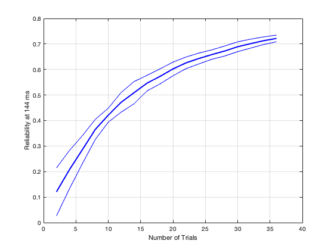

clear all; close all; clc
rng('shuffle');
timepoint_idx = 17;
n_perm = 10;
n_trial_perm = 12;
trial_subset_size_array = 1:18;
rnd_seed = 0;
load('S06.mat');
reliability_trials = computeSampleSizeReliability(X, ...
labels72, ...
timepoint_idx, ...
trial_subset_size_array, ...
n_perm, ...
n_trial_perm, ...
rnd_seed ...
);
avg_reliability_space = mean(reliability_trials, 3);
close all;
plot(trial_subset_size_array .* 2, mean(avg_reliability_space, 1), 'b', 'linewidth', 2);
hold on; grid on
plot(trial_subset_size_array .* 2, mean(avg_reliability_space, 1)+std(avg_reliability_space, [], 1), 'b');
plot(trial_subset_size_array .* 2, mean(avg_reliability_space, 1)-std(avg_reliability_space, [], 1), 'b');
xlabel('Number of Trials');
ylabel(sprintf('Reliability at %d ms', t(timepoint_idx)));
Single-input rng specification: Setting generator to 'twister'.
Setting rng=(0, 'twister').
Permutation 1: 2 trials in subset
Permutation 1: 4 trials in subset
Permutation 1: 6 trials in subset
Permutation 1: 8 trials in subset
Permutation 1: 10 trials in subset
Permutation 1: 12 trials in subset
Permutation 1: 14 trials in subset
Permutation 1: 16 trials in subset
Permutation 1: 18 trials in subset
Permutation 1: 20 trials in subset
Permutation 1: 22 trials in subset
Permutation 1: 24 trials in subset
Permutation 1: 26 trials in subset
Permutation 1: 28 trials in subset
Permutation 1: 30 trials in subset
Permutation 1: 32 trials in subset
Permutation 1: 34 trials in subset
Permutation 1: 36 trials in subset
Permutation 2: 2 trials in subset
Permutation 2: 4 trials in subset
Permutation 2: 6 trials in subset
Permutation 2: 8 trials in subset
Permutation 2: 10 trials in subset
Permutation 2: 12 trials in subset
Permutation 2: 14 trials in subset
Permutation 2: 16 trials in subset
Permutation 2: 18 trials in subset
Permutation 2: 20 trials in subset
Permutation 2: 22 trials in subset
Permutation 2: 24 trials in subset
Permutation 2: 26 trials in subset
Permutation 2: 28 trials in subset
Permutation 2: 30 trials in subset
Permutation 2: 32 trials in subset
Permutation 2: 34 trials in subset
Permutation 2: 36 trials in subset
Permutation 3: 2 trials in subset
Permutation 3: 4 trials in subset
Permutation 3: 6 trials in subset
Permutation 3: 8 trials in subset
Permutation 3: 10 trials in subset
Permutation 3: 12 trials in subset
Permutation 3: 14 trials in subset
Permutation 3: 16 trials in subset
Permutation 3: 18 trials in subset
Permutation 3: 20 trials in subset
Permutation 3: 22 trials in subset
Permutation 3: 24 trials in subset
Permutation 3: 26 trials in subset
Permutation 3: 28 trials in subset
Permutation 3: 30 trials in subset
Permutation 3: 32 trials in subset
Permutation 3: 34 trials in subset
Permutation 3: 36 trials in subset
Permutation 4: 2 trials in subset
Permutation 4: 4 trials in subset
Permutation 4: 6 trials in subset
Permutation 4: 8 trials in subset
Permutation 4: 10 trials in subset
Permutation 4: 12 trials in subset
Permutation 4: 14 trials in subset
Permutation 4: 16 trials in subset
Permutation 4: 18 trials in subset
Permutation 4: 20 trials in subset
Permutation 4: 22 trials in subset
Permutation 4: 24 trials in subset
Permutation 4: 26 trials in subset
Permutation 4: 28 trials in subset
Permutation 4: 30 trials in subset
Permutation 4: 32 trials in subset
Permutation 4: 34 trials in subset
Permutation 4: 36 trials in subset
Permutation 5: 2 trials in subset
Permutation 5: 4 trials in subset
Permutation 5: 6 trials in subset
Permutation 5: 8 trials in subset
Permutation 5: 10 trials in subset
Permutation 5: 12 trials in subset
Permutation 5: 14 trials in subset
Permutation 5: 16 trials in subset
Permutation 5: 18 trials in subset
Permutation 5: 20 trials in subset
Permutation 5: 22 trials in subset
Permutation 5: 24 trials in subset
Permutation 5: 26 trials in subset
Permutation 5: 28 trials in subset
Permutation 5: 30 trials in subset
Permutation 5: 32 trials in subset
Permutation 5: 34 trials in subset
Permutation 5: 36 trials in subset
Permutation 6: 2 trials in subset
Permutation 6: 4 trials in subset
Permutation 6: 6 trials in subset
Permutation 6: 8 trials in subset
Permutation 6: 10 trials in subset
Permutation 6: 12 trials in subset
Permutation 6: 14 trials in subset
Permutation 6: 16 trials in subset
Permutation 6: 18 trials in subset
Permutation 6: 20 trials in subset
Permutation 6: 22 trials in subset
Permutation 6: 24 trials in subset
Permutation 6: 26 trials in subset
Permutation 6: 28 trials in subset
Permutation 6: 30 trials in subset
Permutation 6: 32 trials in subset
Permutation 6: 34 trials in subset
Permutation 6: 36 trials in subset
Permutation 7: 2 trials in subset
Permutation 7: 4 trials in subset
Permutation 7: 6 trials in subset
Permutation 7: 8 trials in subset
Permutation 7: 10 trials in subset
Permutation 7: 12 trials in subset
Permutation 7: 14 trials in subset
Permutation 7: 16 trials in subset
Permutation 7: 18 trials in subset
Permutation 7: 20 trials in subset
Permutation 7: 22 trials in subset
Permutation 7: 24 trials in subset
Permutation 7: 26 trials in subset
Permutation 7: 28 trials in subset
Permutation 7: 30 trials in subset
Permutation 7: 32 trials in subset
Permutation 7: 34 trials in subset
Permutation 7: 36 trials in subset
Permutation 8: 2 trials in subset
Permutation 8: 4 trials in subset
Permutation 8: 6 trials in subset
Permutation 8: 8 trials in subset
Permutation 8: 10 trials in subset
Permutation 8: 12 trials in subset
Permutation 8: 14 trials in subset
Permutation 8: 16 trials in subset
Permutation 8: 18 trials in subset
Permutation 8: 20 trials in subset
Permutation 8: 22 trials in subset
Permutation 8: 24 trials in subset
Permutation 8: 26 trials in subset
Permutation 8: 28 trials in subset
Permutation 8: 30 trials in subset
Permutation 8: 32 trials in subset
Permutation 8: 34 trials in subset
Permutation 8: 36 trials in subset
Permutation 9: 2 trials in subset
Permutation 9: 4 trials in subset
Permutation 9: 6 trials in subset
Permutation 9: 8 trials in subset
Permutation 9: 10 trials in subset
Permutation 9: 12 trials in subset
Permutation 9: 14 trials in subset
Permutation 9: 16 trials in subset
Permutation 9: 18 trials in subset
Permutation 9: 20 trials in subset
Permutation 9: 22 trials in subset
Permutation 9: 24 trials in subset
Permutation 9: 26 trials in subset
Permutation 9: 28 trials in subset
Permutation 9: 30 trials in subset
Permutation 9: 32 trials in subset
Permutation 9: 34 trials in subset
Permutation 9: 36 trials in subset
Permutation 10: 2 trials in subset
Permutation 10: 4 trials in subset
Permutation 10: 6 trials in subset
Permutation 10: 8 trials in subset
Permutation 10: 10 trials in subset
Permutation 10: 12 trials in subset
Permutation 10: 14 trials in subset
Permutation 10: 16 trials in subset
Permutation 10: 18 trials in subset
Permutation 10: 20 trials in subset
Permutation 10: 22 trials in subset
Permutation 10: 24 trials in subset
Permutation 10: 26 trials in subset
Permutation 10: 28 trials in subset
Permutation 10: 30 trials in subset
Permutation 10: 32 trials in subset
Permutation 10: 34 trials in subset
Permutation 10: 36 trials in subset
Permutation 11: 2 trials in subset
Permutation 11: 4 trials in subset
Permutation 11: 6 trials in subset
Permutation 11: 8 trials in subset
Permutation 11: 10 trials in subset
Permutation 11: 12 trials in subset
Permutation 11: 14 trials in subset
Permutation 11: 16 trials in subset
Permutation 11: 18 trials in subset
Permutation 11: 20 trials in subset
Permutation 11: 22 trials in subset
Permutation 11: 24 trials in subset
Permutation 11: 26 trials in subset
Permutation 11: 28 trials in subset
Permutation 11: 30 trials in subset
Permutation 11: 32 trials in subset
Permutation 11: 34 trials in subset
Permutation 11: 36 trials in subset
Permutation 12: 2 trials in subset
Permutation 12: 4 trials in subset
Permutation 12: 6 trials in subset
Permutation 12: 8 trials in subset
Permutation 12: 10 trials in subset
Permutation 12: 12 trials in subset
Permutation 12: 14 trials in subset
Permutation 12: 16 trials in subset
Permutation 12: 18 trials in subset
Permutation 12: 20 trials in subset
Permutation 12: 22 trials in subset
Permutation 12: 24 trials in subset
Permutation 12: 26 trials in subset
Permutation 12: 28 trials in subset
Permutation 12: 30 trials in subset
Permutation 12: 32 trials in subset
Permutation 12: 34 trials in subset
Permutation 12: 36 trials in subset
